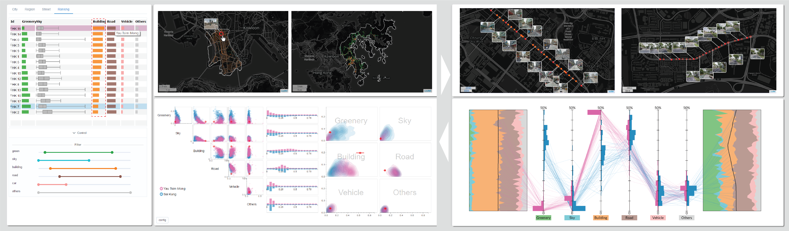

StreetVizor: Visual Exploration of Human-Scale Urban Forms Based on Street Views

Summary
StreetVizor an interactive visual analytics system that helps planners leverage their domain knowledge in exploring human-scale urban forms based on street view images.
This system integrates visual analytics techniques with machine learning models and provides three-scale exploration city scale, region scale and street scale.
Users can freely navigate among these three scales and explore human-scale urban forms.
StreetVizor: Visual Exploration of Human-Scale Urban Forms Based on Street Views Qiaomu Shen, Wei Zeng, Yu Ye,
Stefan Müller Arisona, Simon Schubiger, Remo Burkhard and Huamin Qu IEEE Transactions on Visualization and Computer Graphics (Proceedings of IEEE SciVis2017) Download: [pdf]